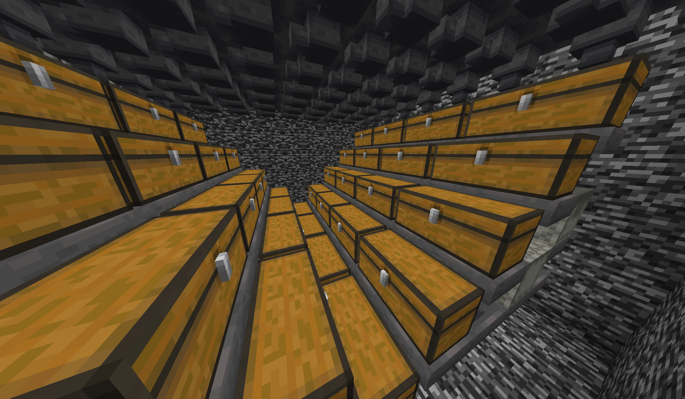
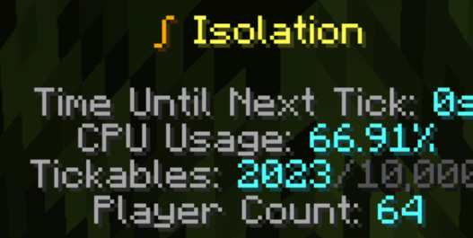

Isolation & Isolation 2

People got addicted and made some crazy setups. This one's from Isolation 1.
This was a very fun project!
I made this around the start of 2024 on DiamondFire. This project was intended
to be very small, but when I released it, people loved it. On its first day, the game had a peak player count of 74!
I don't have evidence of it going up to 72, but I do have this:

Did you know?
If you look at the player list, there are some interesting faces here:
- Luke583 - One of Isolation's beta testers before release
- wodozar - Isolation 1's texture pack maker
- IcyBlizzardPengu, Hi_Tale - People I am friends with that I met through this project!
- NotWizaro, VoidicStar - These people ended up becoming top players later on
- Henry118EP - Ended up becoming one of Isolation 1 & 2's builders
And as a fun tidbit, when I banned someone for abusing dupe glitches without reporting them, I got this message back:
I did not accept this deal. I believe that is actually against DiamondFire's rules.
I gave the game about 14 updates before I stopped working on it.
Why did I stop working on it?
Unfortunately, DiamondFire code is very difficult to scale up.

On DiamondFire, it's very easy to advertise and get players, which is why I use it. But the coding system is very
esoteric. Everything is in Minecraft's blocks and item system. This makes small projects easy to make, but once you
scale them up to make an open-world RPG, for example, you can run into trouble with code space and organization.
This isn't even mentioning DiamondFire's lack of an OOP system, meaning you have to use Dictionaries to emulate those
(which wastes even more code space). I have my own gripes with its coding system, but I'll leave that for another time.
I still like using it despite its flaws.